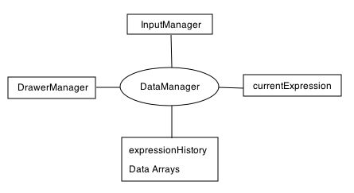
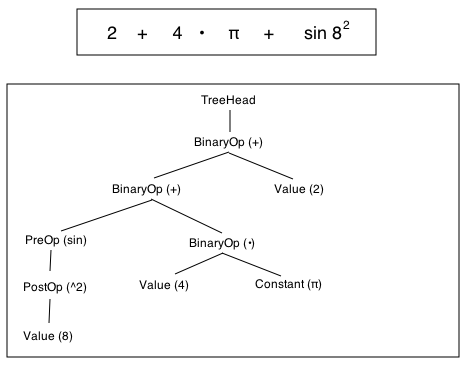

|
Magic Number
Machine Source Code
This document will walk you through the design of the program and how
the various components work. If you're just interested in changing a
piece of the code, try jumping ahead to the Useful bits to hack.Alternately, all of the source files have a block comment at the top which explains (tersely) what the file does. You can just dive straight into the code. Still, if that ain't your thing... Top Level Design Internally, the program is structured something like this: 
If the back button on your browser is too far away, you can click
here to go back to the Help Contents.There is always a single
DataManager object, a single InputManager and a single DrawerManager.
These classes are all created when the program awakes from its NIB file.
DataManager The DataManager is the hub of the program. It manages most of the persistent data and manages communication between the other two managers, the ExpressionView (the main view in the window) and the currentExpression (which is the data displayed in the ExpressionView). The DataManager owns most of the important data in the program, including the currentExpression, the expression history and all of the data arrays. InputManager All user input through the buttons in the window, and most other methods, gets routed through the InputManager. The InputManager handles the fairly boring tasks of converting button presses into messages sent to the current expression. Ideally, if I was following the model I drew up above, the InputManager would communicate these messages to the DataManager which would then pass them on to the currentExpression but I hate writing pass through interfaces so the InputManager sends the messages to the currentExpression directly. Interesting point... the InputManager inherits from NSView because I shove it into the responder hierarchy as first responder so that it can handle copy and paste from the menu. Why I didn't just use the ExpressionView as the first responder (it would be more correct from a conceptual point of view) is historical more than anything else (the ExpressionView didn't exist when I first put in copy and paste and I was too lazy to do it right). DrawerManager This is a misguided bucket of a class. It manages both the behaviour and the data associated with the drawers. It moves the drawers in and out (fun) when required, populates the various tables with data and handles user interaction with the expression history and data arrays. Expressions In case you haven't worked it out by now, everything displayed in the big white part of the window is called an expression. The view is an ExpressionView but you can work out how it operates yourself; here we will look at how the Expression class works. Expressions are made by a tree of classes, each of which inherits from Expression. Each node in the tree has one parent (except the TreeHead) and most can have one child. Exceptions to the one child rule are BinaryOp, which is the only type of node that can have two children, and Constant (and its decendent Value) which have no children. A typical Expression tree will look like this: 
The top box shows an expression
and the bottom box shows the tree that contains it.
The most difficult part of an expression tree is maintaining the order of operations while allowing the expression to be edited. I've done two things to try to help with this: firstly, as the expression moves left to right across the line, each term gets deeper down the tree (this makes deletion right to left easier). The second point is that + and - BinaryOps always get appended to the left, whereas •. x. / and % get appended to the right. When things get deleted in the middle, it gets kinda wrong. Have a look at replaceChild in BinaryOp for more. Interesting to note that there is little internal different between a PreOp and a PostOp – they only really differ by how they are entered. Useful Bits to Hack Adding another function to the Data Functions Insert another object in the dataFunctionRows (roughly line 56 in DrawerManager.m). The object should be defined like this: [NSArray
arrayWithObjects:@"Name", [NSValue value:&@selector(function:)
withObjCType:@encode(SEL)], nil],
where "Name" is the name that you want the function as in the data function table. "function" is the name of a function that you should add to DataFunctions.m. The "sum" function is a good one to look at... it is very simple and shows how to perform basic arithmetic and return a result. You can also change data in the array directly if that makes sense. The 2D and Array functions work in exactly the same way... just add an object to the arrayDataFunctionRows or data2DFunctionRows as appropriate. Interpreting the NSMutableArray "values" is a little harder to work with in these cases. I recommend looking at one of the other functions first to see how its done. Adding/Changing the Constants in the Constants Drawer Even easier than above, just add or change a line that looks like this: [NSArray
arrayWithObjects:[NSString stringWithUTF8String:"name"], [BigCFloat
bigFloatWithDouble:123456 radix:10], nil],
in the constantsDataRows definition at line 100 of DrawerManager.m. "name" is what will appear in the constants table and 123456 is the value that will be inserted. Brushed Metal UI Though I'm sure I don't know why you would... Open the Magic Number Machine project file. Open the Interface.nib file in the Resources folder. Click on "Main Window" in the Instances window/tab. Select "Show Info" from the Tools menu. Click on the "Textured Window" checkbox. Save the file, close it and choose "Build and Run" from your development environment. Implementing division When implementing BigFloat.m, the single hardest part was implementing the division. Something I didn't realise until I had to do it for myself, is that if you store your number in blocks of bits (BigFloat uses blocks of 16-bit values), you have to set a maximum limit on each block that is a power of your radix minus 1. ie For base 10 numbers in 16 bit, it is important to limit each 16-bit block to 9999. Why does this matter? Without it, you can't do long division. Division has stacks of other quirks. If you need to implement it yourself and are tired of people telling you to look it up in Knuth, read divideBy in BigFloat.m – it isn't fast but it's straightforward and reasonably self contained. Getting the Bezier Path of text Have you ever wondered how? It's hard to work out from documentation alone. Try looking at line 707-718, 753-761 and line 885, all in generateValuePath in Value.m. As of this writing, be careful to explicitly release the NSTextStorage (or else a weird bug will crash your program) and don't use getGlyphs:range: instead of the repeated calls to glyphAtIndex, since it also crashes periodically. I don't think these functions get called much. Fun (?) homework projects for home viewers like you Things I haven't implemented but would be really useful for the greater good of the world:
|